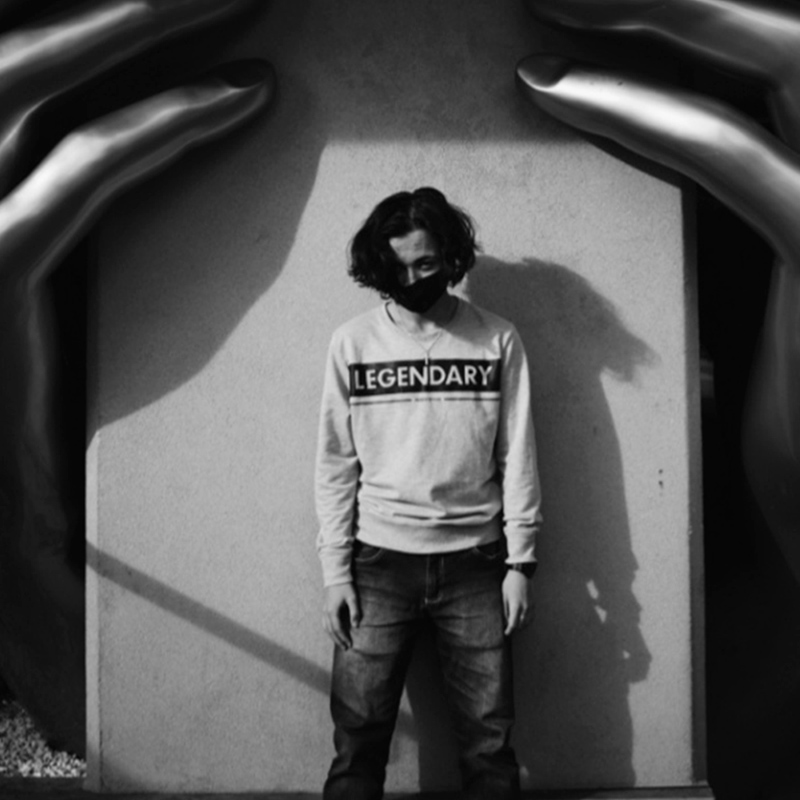
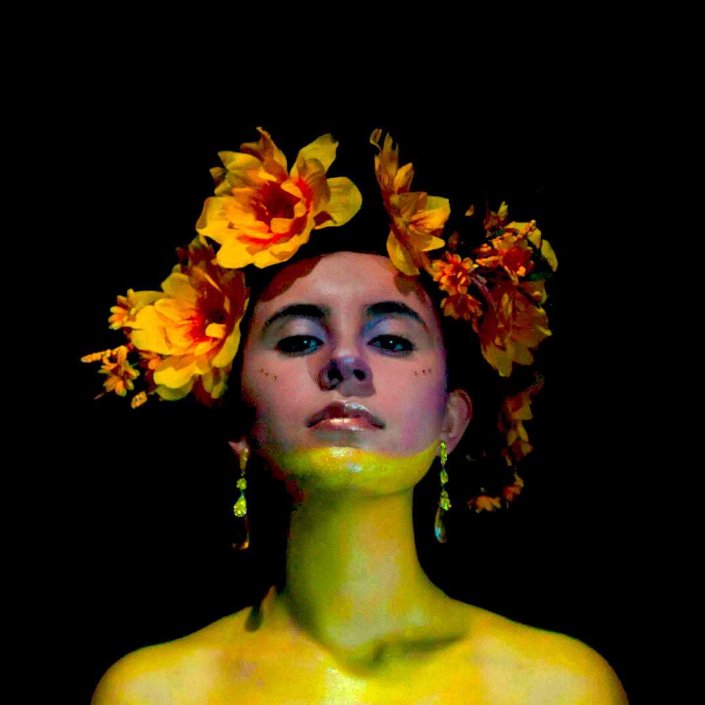
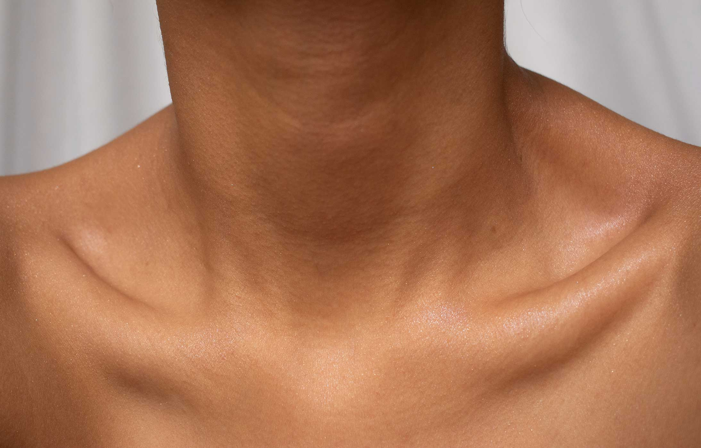

Autorretrato
MIRARSE A Sí MISMO
“La fotografía es nuestro exorcismo. La sociedad primitiva tenía sus máscaras y la sociedad burguesa sus espejos. Nosotros tenemos nuestras imágenes”
Jean Baudrillard
El autorretrato es una manifestación que la fotografía hereda de la expresión pictórica, fue practicada incluso por uno de los primeros investigadores en la fijación de la imagen producida por la luz: Hippolyte Bayard (1801-1887), quien se fotografió así mismo simulando una fotografía post mortem, como protesta al no recibir el crédito que creía merecer, por sus adelantos tecnológicos en la fijación de la imagen a través del positivo directo como llamó a su técnica.
Desde entonces diversos fotógrafos han hecho uso del autorretrato como parte de su producción fotográfica. Uno de los ejercicios planteados es lograr que el estudiante cree autorretratos, partiendo de una premisa que guiará cada una de las capturas.
MICHELLE RIOS
LORENA ERAZO
NICOLAS SÁNCHEZ
DANIEL PINTO
NICOLAS SÁNCHEZ
MARÍA PINZÓN
NICOLAS SÁNCHEZ
MICHELLE RIOS
ESTEBAN SOLANO

GERHARD BRUHL

VALENTINA MILLAN
VALENTINA CUSPOCA
MICHELLE RIOS

CAMILA AUZA
DANIEL PINTO
GERHARD BRUHL
VALENTINA CUSPOCA
GERHARD BRUHL

SAMUEL
CAMILA BETANCOURT
GERHARD BRUHL
EKATERINA
KAREN SASTOQUE

JULIANA GÓMEZ
MARÍA LÓPEZ
MARÍA MORALES
MANUELA CARDENAS
LAURA VARGAS
LAURA VARGAS
MARIANA VANEGAS
MARÍA MORALES

PAULA SERNA
LAURA VARGAS
KAREN SASTOQUE
JULIANA RINCÓN
LUISA BORJA
GEOFFREY MONROY
JULIANA RINCÓN
LUISA BORJA
MARÍA RAMIREZ
JAHILIM OSORIO

JAHILIM OSORIO
JAHILIM OSORIO
JUANITA GONZÁLEZ

ANNY URIBE
ARIDNA PRIETO

EDISSON SÁNCHEZ
LAURA MONTAÑA
ZAHIRA ORTIZ
JAHILIM OSORIO
SANTIAGO MORENO
NATALIA JUNCO
LUISA BORJA

LUISA BORJA
LUISA BORJA
JULIANA GÓMEZ
MANUELA CARDENAS
MANUELA CARDENAS
Revisando a Maier
Vivian Maier fue una fotógrafa estadounidense cuyo archivo fue descubierto en el año 2007. Su gusto por los autorretratos es evidente en todo su archivo, se fotografiaba en reflejos y también aprovechaba las sombras en escenarios urbanos que encontraba en sus recorridos por las calles.
Siendo Mapplethorpe
Este fotógrafo de los suburbios de estados unidos, hablaba de buscar lo inesperado, desafiando estándares estéticos clásicos.
Autorretrato psicológico.
Este ejercicio se plantea como práctica reflexiva en la que el fotógrafo se pregunta sobre quién es y qué imagen proyecta de sí mismo; hechos los cuestionamientos se propone su resolución frente a un espejo, buscando crear una suerte de auto diálogo, con el que se pueda tener como resultado una imagen fotográfica.
Autorretrato contextual
Partiendo de la coyuntura en la que nos encontramos actualmente, debido a la proliferación del virus “Covid-19” que ha derivado en un confinamiento de 32 días para la fecha en que se propone esta práctica. Por tal motivo los estudiantes deben tomar sus clases desde sus habitáculos residenciales, permitiendo generar relaciones con su espacio familiar y personal que posiblemente no tenían antes de esta situación. Así, se busca crear un autorretrato en el que esté presente ese espacio con el que el estudiante encuentre una identificación ya sea por su rutina o por una afinidad energética para la creación de una propuesta fotográfica.
Autorretrato cromático
El color es protagonista indiscutible de nuestras vidas, ya sea porque lo usamos para identificarnos como parte de un grupo social, deportivo, o como código dentro de un discurso visual. Asimismo, el color hace parte de la construcción de la imagen personal. Es por ello que esta práctica busca generar una conciencia real de la paleta cromática que identifica a cada estudiante, para que posteriormente y teniendo como materia prima su gama tonal personal, cree un autorretrato en el que el color tenga una importante participación.